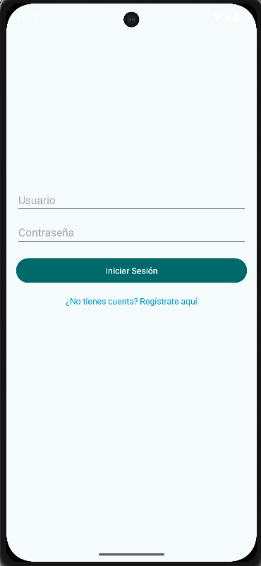
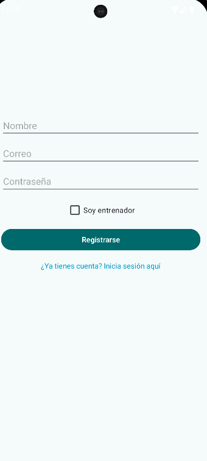
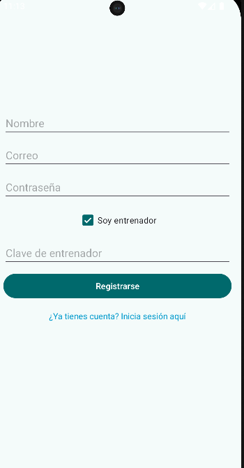
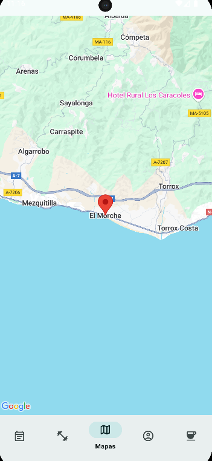
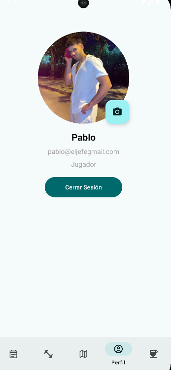
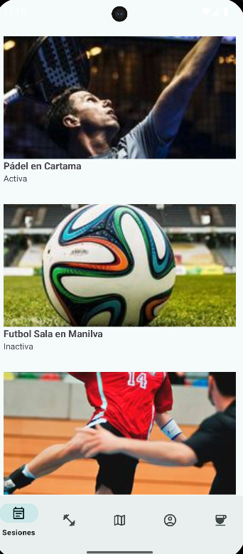

Guía Visual de Pantallas
A continuación se presenta una guía visual de la navegación entre pantallas en la app TrainingRoutine.
1. Inicio de sesión
Pantalla de autenticación inicial. Permite ingresar con email y contraseña. Si el usuario no tiene cuenta, puede registrarse.
2. Registro
Formulario de registro. Los usuarios pueden registrarse como jugador o entrenador. Si seleccionan 'Entrenador', deben ingresar una clave especial:
3. Menú principal (entrenador)

Menú principal donde el entrenador puede ver y gestionar sesiones de entrenamiento, jugadores y perfil.
4. Lista de sesiones
Vista con todas las sesiones creadas, su estado y detalles. Desde aquí se puede acceder a cada sesión.
5. Detalles de sesión
Muestra la información de la sesión, entrenamientos asociados, ubicación, y jugadores asignados.
6. Lista de entrenamientos
Listado de entrenamientos disponibles para añadir a una sesión. Incluye tipo y descripción.
7. Lista de jugadores

Permite visualizar los jugadores registrados, sus datos y posición. También se pueden asignar a sesiones.
8. Sección “Sobre mí”
Contiene un resumen del autor y un minijuego de memoria interactivo con logos de tecnologías usadas en el proyecto.